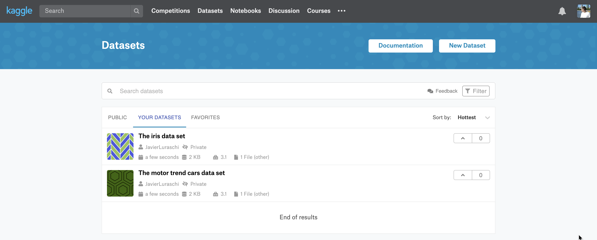

In order to use Kaggle as a board, you need to authenticate first by creating a token file from kaggle.com/me/account.
Notice that board_register_kaggle() is just an alias with named parameters to board_register(); the previous code is equivalent to:
Once the board is registered, you can pin and search using pin(), pin_get() and pin_find().
Like in other boards, you can create pins for iris and mtcars by setting board to Kaggle’s board name,
pin(iris, description = "The iris data set", board = "kaggle")
pin(mtcars, description = "The motor trend cars data set", board = "kaggle")After a pin is created, the pin also becomes available in the Kaggle’s dataset website; by default, they are created as private datasets.

You can also retrieve pins back from this repo using the now familiar pin_get() function. However, since Kaggle names require at least six characters, pins appends -pin to names that are shorter than Kaggle’s required size.
# A tibble: 150 x 5
Sepal.Length Sepal.Width Petal.Length Petal.Width Species
<dbl> <dbl> <dbl> <dbl> <fct>
1 5.1 3.5 1.4 0.2 setosa
2 4.9 3 1.4 0.2 setosa
3 4.7 3.2 1.3 0.2 setosa
4 4.6 3.1 1.5 0.2 setosa
5 5 3.6 1.4 0.2 setosa
6 5.4 3.9 1.7 0.4 setosa
7 4.6 3.4 1.4 0.3 setosa
8 5 3.4 1.5 0.2 setosa
9 4.4 2.9 1.4 0.2 setosa
10 4.9 3.1 1.5 0.1 setosa
# … with 140 more rowsYou can then search pins in Kaggle using pin_find(), which by default search all boards but you can also explicitly request to use this particular Kaggle board:
# A tibble: 11 x 4
name description type board
<chr> <chr> <chr> <chr>
1 javierluraschi/mtcars The motor trend cars data set files kagg…
2 wkirgsn/electric-motor-temperature Electric Motor Temperature files kagg…
3 new-york-city/nypd-motor-vehicle-collisions NYPD Motor Vehicle Collisions files kagg…
4 rodrigodomingos/brazilian-insurance-motor-m… Brazilian Motor Insurance Market files kagg…
5 dan195/ebaymotorcycles Ebay Motorcycle Prices files kagg…
6 new-york-state/nys-motor-vehicle-crashes-an… NYS Motor Vehicle Crashes and Insur… files kagg…
7 floser/french-motor-claims-datasets-fremtpl… French Motor Claims Datasets freMTP… files kagg…
8 floser/swedish-motor-insurance Swedish Motor Insurance files kagg…
9 kkairu/motorbike-ride-cancellation-data MotorBike Ride Cancellation Data files kagg…
10 shreedevi/motor-insurance Motor Insurance files kagg…
11 cdc/cdc-motor-vehicle-occupant-death-rate CDC Motor Vehicle Occupant Death Ra… files kagg…Kaggle boards contain extended fields that go beyond the fields pins requires, to retrieve all the additional fields use extended = TRUE:
# A tibble: 8 x 27
id subtitle tags creatorName creatorUrl totalBytes url lastUpdated downloadCount
<int> <chr> <lis> <chr> <chr> <dbl> <chr> <chr> <int>
1 236410 140 hrs… <df[… Kirgsn wkirgsn 49334849 http… 2019-06-19… 6785
2 31447 From Ne… <df[… Kaggle Team kaggleteam 71098646 http… 2019-11-12… 638
3 605 An intr… <df[… Rodrigo Do… rodrigodo… 374779 http… 2017-01-11… 615
4 34387 From Ne… <df[… Kaggle Team kaggleteam 0 http… 2019-07-03… 479
5 12630 "" <df[… floser floser 20476 http… 2018-02-10… 427
6 2182 Ebay Mo… <df[… Dan dan195 262517 http… 2017-08-23… 701
7 118991 Predict… <df[… floser floser 6955329 http… 2019-02-11… 212
8 158751 "" <df[… donpiano donpiano 226652 http… 2019-04-07… 111
# … with 18 more variables: isPrivate <lgl>, isReviewed <lgl>, isFeatured <lgl>,
# licenseName <chr>, description <chr>, ownerName <chr>, ownerRef <chr>, kernelCount <int>,
# topicCount <int>, viewCount <int>, voteCount <int>, currentVersionNumber <int>,
# files <list>, versions <list>, usabilityRating <dbl>, name <chr>, board <chr>, type <chr>Or pin_info() to retrieve all the information associated with a particular pin,
# Source: kaggle<wkirgsn/electric-motor-temperature> [files]
# Description: Electric Motor Temperature
# Extended:
# - id: 236410
# - subtitle: 140 hrs recordings from a permanent magnet synchronous motor (PMSM)
# - tags: (ref) time series, electrical components, electrical engineering, automobiles, regression...
# - creatorName: Kirgsn
# - creatorUrl: wkirgsn
# - totalBytes: 49334849
# - url: https://www.kaggle.com/wkirgsn/electric-motor-temperature
# - lastUpdated: 2019-06-19T11:12:41.147Z
# - downloadCount: 6785
# - isPrivate: FALSE
# - isReviewed: TRUE
# - isFeatured: FALSE
# - licenseName: Data files © Original Authors
# - ownerName: Kirgsn
# - ownerRef: wkirgsn
# - kernelCount: 24
# - topicCount: 1
# - viewCount: 40705
# - voteCount: 190
# - currentVersionNumber: 2
# - usabilityRating: 1
# - extension: zipNotice that the given ‘motor’ search keyword is searched in the name and description fields for the pins available in this repo.